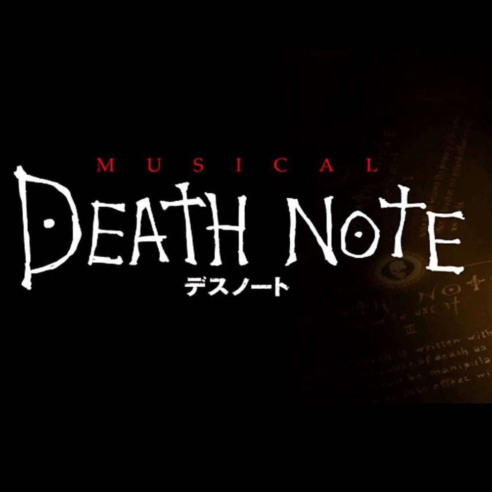

They're Only Human

Look at how they crawl around
Upon the ground like little ants
Yes, but how they fascinate, confusing fate
With what is merely chance
Isn't it a laugh? (Isn't it a shame?)
Thinking there is someone in heaven to blame
Yes, but even while blaming fate for the lives that they lead
They hope for the lives that they need
Living every day 'til the day they die
Never getting answers (yet still asking, "Why?")
Going through the motions as if there will be a reward
While we stay eternally bored!
They're only human
They don't see, who they are is who they'll always be
Only human, after all
So they push and they shove
With this thing they call love, 'til they fall!
Isn't it a farce? (Isn't it a waste?)
Struggling to face what can never be faced
Yes, but maybe death can release something more than we share
I really don't know and don't care
They're only human
Standing still
Doomed to live pushing boulders uphill
Only human, after all, so they give and they take
Hoping someone will help break their fall
They will pray, curse, live, die
Never knowing their truth is another man's lie
Eat, sleep, love, hate, like a leaf blowing in the wind
Watch them all vacillate!
They're only human
They can't see
All the years they could give you and me
Only human, after all
So they give and they take
'Til their silly hearts break
Looking down from above
I'm intrigued by their love
So let's call
Let's call!
Monster
[ODYSSEUS]
How has everything been turned against us?
How did suffering become so endless?
How am I to reunite with my estranged?
Do I need to change?
I'm surrounded by the souls of those I've lost
I'm the only one whose line I haven't crossed
What if the greatest threat we'll find across the sea
Is me?
What if I'm the monster?
What if I'm in the wrong?
What if I'm the problem that's been hiding all along?
What if I'm the one who killed you
Every time I caved to guilt?
What if I've been far too kind to foes
But a monster to ourselves?
What if I'm the monster?
Is the cyclops struck with guilt when he kills?
Is he up in the middle of the night?
Or does he end my men to avenge his friend
And then sleep knowing he has done him right?
When the witch turns men to pigs to protect her nymphs is she going insane?
Or did she learn to be colder when she got older and now she saves them the pain?
When a god comes down and makes a fleet drown
Is he scared that he's doing something wrong?
Or does he keep us in check so we must respect him
And now no one dares to piss him off?
Does a soldier use a wooden horse to kill sleeping Trojans 'cause he is vile?
Or does he throw away his remorse and save more lives with guile?
If I became the monster, and threw that guilt away
Would that make us stronger?
Would it keep our foes at bay?
If I became the monster to everyone but us
And made sure we got home again
Who would care if we're unjust?
If I became the
[SOLDIERS]
Monster
[ODYSSEUS]
Oh, ruthlessness is mercy upon ourselves
[SOLDIERS]
Monster
[ODYSSEUS]
And deep down I know this well
I lost my best friend
I lost my mentor, my mom
Five hundred men gone, this can't go on
I must get to see Penelope and Telemachus
So if we must sail through dangerous oceans and beaches
I'll go where Poseidon won't reach us
And if I gotta drop another infant from a wall
In an instant so we all don't die
[ODYSSEUS, ALL]
Then I'll become the
Monster
I will deal the blow
And I'll become the
Monster
Like none they've ever known
So what if I'm the
Monster
Lurking deep below?
I must become the
Monster
And then we'll make it home
Monster
Penelope
Monster
Telemachus
Monster
Oh, ruthlessness is mercy upon ourselves
Monster
I'll become the monster
Wolf in sheep's clothing
This is about you
Beware, beware, be skeptical
Of their smiles, their smiles of plated gold
Deceit, so natural
But a wolf in sheep's clothing is more than a warning
Baa, baa, black sheep, have you any soul?
No, sir, by the way, what the hell are morals?
Jack, be nimble, Jack, be quick
Jill's a little whore, and her alibis are turning tricks
So could you
Tell me how you're sleeping easy?
How you're only thinking of yourself? (Of yourself)
Show me how you justify
Telling all your lies like second nature
Listen, mark my words, one day (one day)
You will pay, you will pay
Karma's gonna come collect your debt
Aware, aware, you stalk your prey
With criminal mentality
You sink your teeth into the people you depend on
Infecting everyone, you're quite the problem
Fee-fi-fo-fum, better run and hide
I smell the blood of a petty little coward
Jack, be lethal, Jack, be slick (slick)
Jill will leave you lonely, dying in a filthy ditch
So, could you
Tell me how you're sleeping easy?
How you're only thinking of yourself?
Show me how you justify
Telling all your lies like second nature (oh)
Listen, mark my words, one day (one day)
You will pay, you will pay
Karma's gonna come collect your debt (maybe, one day)
Maybe you'll change (oh)
Abandon all your wicked ways (one day)
Make amends and start anew again
Maybe you'll see
All the wrongs you did to me (one day)
And start all over, start all over-
Oh my god, who am I kidding?
Now, let's not get overzealous here
You've always been a huge piece of shit
If I could kill you, I would, but it's frowned upon in all 50 states
Having said that, burn in hell
Yeah (where's the little fucker?)
Oh, oh, oh, oh
So, tell me how you're sleeping easy
How you're only thinking of yourself
Show me how you justify
Telling all your lies like second nature
Listen, mark my words, one day (one day)
You will pay, you will pay
Karma's gonna come collect your debt
(Fuck off)
Karma's gonna come collect your debt
(She's a li- she's a li- she's a liar) oh, oh, oh
Karma's gonna come collect your debt (Jazzy)
Smiling when i die
Yesterday felt like my graduation
But now some of those kids have got their own
Been a while since I took a vacation
It's been a while since I really let go
Don't wanna look back
Thinking I could've done this
Or I could've tried that
Don't wanna look back
'Cause it's going by fast
I'ma call my mother
It's been a while since I've been home
Take a trip in the summer
See all the lights in Tokyo
Get lost in the desert
Just to see what I can find
So when it's my time, I
I'm smiling when I die (when I die, when I die)
Smiling when I die (when I die, when I die)
Yesterday felt like my first day working
But now I'm not the youngest on the clock
Been a while since days were just for burning
It's been a while since I threw back a shot
Don't wanna look back
Thinking I could've done this
Or I could've tried that
Don't wanna look back
'Cause it's going by fast
I'ma call my mother
It's been a while since I've been home
Take a trip in the summer
See all the lights in Tokyo
Get lost in the desert
Just to see what I can find
So when it's my time, I
I'm smiling when I die (when I die, when I die)
Smiling when I die (when I die, when I die)
There's been a couple times that I've fell in love
But a couple times just ain't enough
There's been a couple joints that I could've shared
But I guess I gotta start somewhere
I'ma call my mother
It's been a while since I've been home
Take a trip in the summer
See all the lights in Tokyo
Get lost in the desert
Just to see what I can find
So when it's my time, I
I'm smiling when I die (when I die, when I die)
Smiling when I die (when I die, when I die)
Smiling when I die (when I die, when I die)
Smiling when I die (when I die, when I die)
Smiling when I die (when I die, when I die)